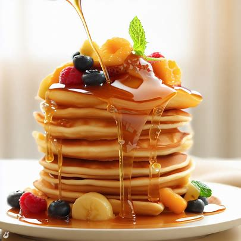

🥞 Pancakes
Welcome to your go-to guide for making fluffy homemade pancakes!

These classic pancakes are light, golden, and perfect for any morning — whether you're fueling up for a productive day or enjoying a lazy Sunday brunch. Follow this easy recipe to make the ultimate stack of soft, buttery pancakes with a crisp edge and tender center.
Preparation
A measuring cup of flour, a jug of milk, eggs, and a whisk beside a sizzling skillet on a stovetop.
📝Ingredients
- 1 cup all-purpose flour
- 2 tablespoons granulated sugar
- 1 teaspoon baking powder
- 1/2 teaspoon baking soda
- 1/4 teaspoon salt
- 1 cup milk (preferably whole)
- 1 large egg
- 2 tablespoons melted butter or vegetable oil
- 1/2 teaspoon vanilla extract (optional)
- Butter or oil for cooking
Instructions
- In a large mixing bowl, whisk together flour, sugar, baking powder, baking soda, and salt.
- In a separate bowl, beat the egg, then mix in milk, melted butter (or oil), and vanilla.
- Pour the wet ingredients into the dry ingredients. Stir until just combined — it’s okay if the batter[Batter is a flour mixture with liquid and other ingredients such as sugar, salt, egg, milk and leavening used for cooking.] is slightly lumpy.
- Heat a non-stick skillet or griddle over medium heat. Lightly grease with butter or oil.
- Pour 1/4 cup of batter for each pancake onto the skillet. Cook until bubbles form on the surface and edges look set (about 2–3 minutes).
- Flip and cook for another 1–2 minutes, or until golden brown.
- Serve warm with maple syrup, fruit, or your favorite toppings.
👩🍳Pro Tip
For extra fluffiness, let the batter rest for 5–10 minutes before cooking!